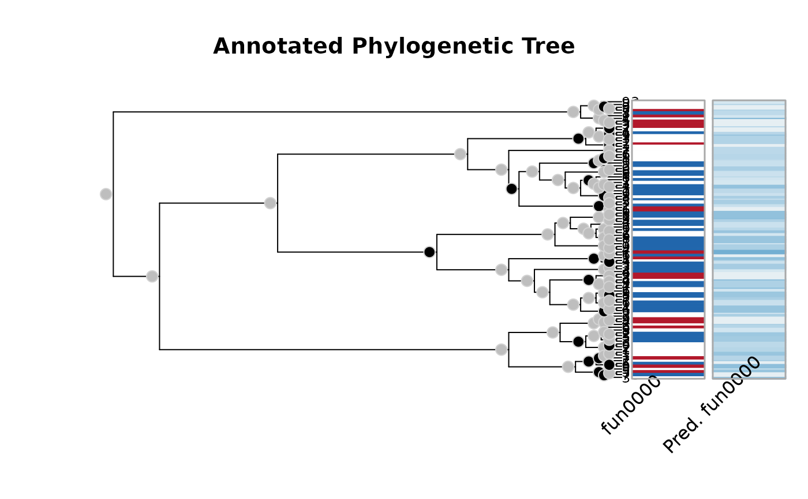

The function is a wrapper of stats::optim().
aphylo_mle( model, params, method = "L-BFGS-B", priors = function(p) 1, control = list(), lower = 1e-05, upper = 1 - 1e-05, check_informative = getOption("aphylo_informative", FALSE), reduced_pseq = getOption("aphylo_reduce_pseq", TRUE) )
| model | A model as specified in aphylo-model. |
|---|---|
| params | A vector of length 7 with initial parameters. In particular
|
| method, control, lower, upper | Arguments passed to |
| priors | A function to be used as prior for the model (see bprior). |
| check_informative | Logical scalar. When |
| reduced_pseq | Logical. When |
An object of class aphylo_estimates.
The default starting parameters are described in APHYLO_PARAM_DEFAULT.
Other parameter estimation:
APHYLO_DEFAULT_MCMC_CONTROL,
aphylo_hier()
# Using simulated data ------------------------------------------------------ set.seed(19) dat <- raphylo(100) dat <- rdrop_annotations(dat, .4) # Computing Estimating the parameters ans <- aphylo_mle(dat ~ psi + mu_d + eta + Pi) ans #> Warning: NaNs produced #> #> ESTIMATION OF ANNOTATED PHYLOGENETIC TREE #> #> Call: aphylo_mle(model = dat ~ psi + mu_d + eta + Pi) #> LogLik: -40.7522 #> Method used: L-BFGS-B (9 steps) #> convergence: 0 (see ?optim) #> # of Leafs: 100 #> # of Functions 1 #> # of Trees: 1 #> #> Estimate Std. Err. #> psi0 0.5849 NaN #> psi1 0.4182 8.4792 #> mu_d0 0.4997 NaN #> mu_d1 0.5015 NaN #> eta0 1.0000 0.2000 #> eta1 1.0000 0.1690 #> Pi 0.5029 NaN #> # Plotting the path plot(ans)  # Computing Estimating the parameters Using Priors for all the parameters mypriors <- function(params) { dbeta(params, c(2, 2, 2, 2, 1, 10, 2), rep(10, 7)) } ans_dbeta <- aphylo_mle(dat ~ psi + mu_d + eta + Pi, priors = mypriors) ans_dbeta #> #> ESTIMATION OF ANNOTATED PHYLOGENETIC TREE #> #> Call: aphylo_mle(model = dat ~ psi + mu_d + eta + Pi, priors = mypriors) #> LogLik (unnormalized): -58.7517 #> Method used: L-BFGS-B (20 steps) #> convergence: 0 (see ?optim) #> # of Leafs: 100 #> # of Functions 1 #> # of Trees: 1 #> #> Estimate Std. Err. #> psi0 0.0859 0.0790 #> psi1 0.0791 0.0716 #> mu_d0 0.1564 0.0581 #> mu_d1 0.1062 0.0495 #> eta0 0.7353 0.0757 #> eta1 0.8302 0.0516 #> Pi 0.0950 0.0906 #>